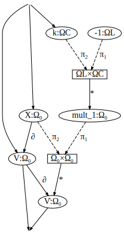
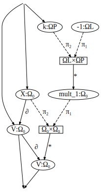

This tutorial shows how to use Decapodes to represent simple equations. These aren't using any of the Discrete Exterior Calculus or CombinatorialSpaces features of Decapodes. They just are a reference for how to build equations with the @decapodes macro and see how they are stored as ACSets.
using Catlab
using CombinatorialSpaces
using DiagrammaticEquations
using Decapodes
The harmonic oscillator can be written in Decapodes in at least three different ways.
oscillator = @decapode begin
X::Form0
V::Form0
∂ₜ(X) == V
∂ₜ(V) == -k(X)
end
DiagrammaticEquations.decapodeacset.SummationDecapode{Any, Any, Symbol} {Var:4, TVar:2, Op1:4, Op2:0, Σ:0, Summand:0, Type:0, Operator:0, Name:0}
| 1 |
Form0 |
X |
| 2 |
Form0 |
V |
| 3 |
infer |
•1 |
| 4 |
infer |
V̇ |
| 1 |
1 |
2 |
∂ₜ |
| 2 |
2 |
4 |
∂ₜ |
| 3 |
1 |
3 |
k |
| 4 |
3 |
4 |
- |
The default representation is a tabular output as an ACSet. The tables are Var for storing variables (X) and their types (Form0). TVar for identifying a subset of variables that are the tangent variables of the dynamics (Ẋ). The unary operators are stored in Op1 and binary operators stored in Op2. If a table is empty, it doesn't get printed.
Even though a diagrammatic equation is like a graph, there are no edge tables, because the arity (number of inputs) and coarity (number of outputs) is baked into the operator definitions.
You can also see the output as a directed graph. The input arrows point to the state variables of the system and the output variables point from the tangent variables. You can see that I have done the differential degree reduction from x'' = -kx by introducing a velocity term v. Decapodes has some support for derivatives in the visualization layer, so it knows that dX/dt should be called Ẋ and that dẊ/dt should be called Ẋ̇.
to_graphviz(oscillator)

-->
<!-- Title: G Pages: 1 -->
<svg width="132pt" height="256pt"
viewBox="0.00 0.00 132.03 255.64" xmlns="http://www.w3.org/2000/svg" xmlns:xlink="http://www.w3.org/1999/xlink">
<g id="graph0" class="graph" transform="scale(1 1) rotate(0) translate(4 251.6396)">
<title>G</title>
<polygon fill="%23ffffff" stroke="transparent" points="-4,4 -4,-251.6396 128.033,-251.6396 128.033,4 -4,4"/>
<!-- n1 -->
<g id="node1" class="node">
<title>n1</title>
<ellipse fill="none" stroke="%23000000" cx="49.4056" cy="-196.033" rx="24.0833" ry="10.7143"/>
<text text-anchor="middle" x="49.4056" y="-192.333" font-family="Times,serif" font-size="14.00" fill="%23000000">X:Ω₀</text>
</g>
<!-- n2 -->
<g id="node2" class="node">
<title>n2</title>
<ellipse fill="none" stroke="%23000000" cx="101.4056" cy="-123.8198" rx="22.7556" ry="10.7143"/>
<text text-anchor="middle" x="101.4056" y="-120.1198" font-family="Times,serif" font-size="14.00" fill="%23000000">V:Ω₀</text>
</g>
<!-- n1&%2345;>n2 -->
<g id="edge5" class="edge">
<title>n1&%2345;>n2</title>
<path fill="none" stroke="%23000000" d="M54.8432,-185.6198C59.7591,-176.5457 67.4297,-163.191 75.4056,-152.4264 79.2761,-147.2026 83.9405,-141.8358 88.2437,-137.1824"/>
<polygon fill="%23000000" stroke="%23000000" points="89.5948,-138.3003 91.748,-133.4601 87.0464,-135.9011 89.5948,-138.3003"/>
<text text-anchor="middle" x="81.4056" y="-156.2264" font-family="Times,serif" font-size="14.00" fill="%23000000">∂ₜ</text>
</g>
<!-- n3 -->
<g id="node3" class="node">
<title>n3</title>
<ellipse fill="none" stroke="%23000000" cx="30.4056" cy="-123.8198" rx="30.3115" ry="10.7143"/>
<text text-anchor="middle" x="30.4056" y="-120.1198" font-family="Times,serif" font-size="14.00" fill="%23000000">•1:Ω•</text>
</g>
<!-- n1&%2345;>n3 -->
<g id="edge7" class="edge">
<title>n1&%2345;>n3</title>
<path fill="none" stroke="%23000000" d="M45.3628,-185.5424C43.3915,-180.1771 41.089,-173.5112 39.4056,-167.4264 36.927,-158.4674 34.7911,-148.3035 33.2229,-140.0434"/>
<polygon fill="%23000000" stroke="%23000000" points="34.8591,-139.2665 32.2307,-134.6672 31.4173,-139.9018 34.8591,-139.2665"/>
<text text-anchor="middle" x="44.4056" y="-156.2264" font-family="Times,serif" font-size="14.00" fill="%23000000">k</text>
</g>
<!-- n4 -->
<g id="node4" class="node">
<title>n4</title>
<ellipse fill="none" stroke="%23000000" cx="48.4056" cy="-51.6066" rx="25.4118" ry="10.7143"/>
<text text-anchor="middle" x="48.4056" y="-47.9066" font-family="Times,serif" font-size="14.00" fill="%23000000">V̇:Ω•</text>
</g>
<!-- n2&%2345;>n4 -->
<g id="edge6" class="edge">
<title>n2&%2345;>n4</title>
<path fill="none" stroke="%23000000" d="M91.7925,-114.1462C86.6724,-108.7773 80.4157,-101.858 75.4056,-95.2132 68.5305,-86.0949 61.7675,-75.1684 56.7298,-66.534"/>
<polygon fill="%23000000" stroke="%23000000" points="58.1302,-65.4589 54.1189,-61.9989 55.097,-67.2053 58.1302,-65.4589"/>
<text text-anchor="middle" x="81.4056" y="-84.0132" font-family="Times,serif" font-size="14.00" fill="%23000000">∂ₜ</text>
</g>
<!-- n6 -->
<g id="node6" class="node">
<title>n6</title>
</g>
<!-- n2&%2345;>n6 -->
<g id="edge3" class="edge">
<title>n2&%2345;>n6</title>
<path fill="none" stroke="%23000000" d="M99.0095,-113.0091C93.5825,-88.5233 80.4741,-29.38 75.9621,-9.0228"/>
<polygon fill="%23000000" stroke="%23000000" points="77.6464,-8.5345 74.8559,-4.0317 74.2294,-9.2919 77.6464,-8.5345"/>
</g>
<!-- n3&%2345;>n4 -->
<g id="edge8" class="edge">
<title>n3&%2345;>n4</title>
<path fill="none" stroke="%23000000" d="M33.0616,-113.1645C36.0659,-101.1114 40.9894,-81.3593 44.4471,-67.4873"/>
<polygon fill="%23000000" stroke="%23000000" points="46.2274,-67.5805 45.7387,-62.3056 42.8313,-66.7339 46.2274,-67.5805"/>
<text text-anchor="middle" x="43.9056" y="-84.0132" font-family="Times,serif" font-size="14.00" fill="%23000000">&%2345;</text>
</g>
<!-- n4&%2345;>n6 -->
<g id="edge4" class="edge">
<title>n4&%2345;>n6</title>
<path fill="none" stroke="%23000000" d="M53.9195,-41.0863C58.9579,-31.4734 66.272,-17.5185 70.6614,-9.1437"/>
<polygon fill="%23000000" stroke="%23000000" points="72.3979,-9.6003 73.169,-4.3593 69.2979,-7.9754 72.3979,-9.6003"/>
</g>
<!-- n5 -->
<g id="node5" class="node">
<title>n5</title>
</g>
<!-- n5&%2345;>n1 -->
<g id="edge1" class="edge">
<title>n5&%2345;>n1</title>
<path fill="none" stroke="%23000000" d="M74.2884,-243.5081C71.3709,-237.9417 63.3224,-222.5856 57.1616,-210.8311"/>
<polygon fill="%23000000" stroke="%23000000" points="58.6956,-209.988 54.8244,-206.3718 55.5956,-211.6128 58.6956,-209.988"/>
</g>
<!-- n5&%2345;>n2 -->
<g id="edge2" class="edge">
<title>n5&%2345;>n2</title>
<path fill="none" stroke="%23000000" d="M75.8569,-243.5252C78.4596,-231.3304 91.6576,-169.4927 97.997,-139.7901"/>
<polygon fill="%23000000" stroke="%23000000" points="99.7646,-139.8924 99.0968,-134.6372 96.3417,-139.1618 99.7646,-139.8924"/>
</g>
</g>
</svg>
)
In the previous example, we viewed negation and transformation by k as operators. Notice that k appears as an edge in the graph and not as a vertex. You can also use a 2 argument function like multiplication (*). With a constant value for k::Constant. In this case you will see k enter the diagram as a vertex and multiplication with * as a binary operator.
oscillator = @decapode begin
X::Form0
V::Form0
k::Constant
∂ₜ(X) == V
∂ₜ(V) == -k*(X)
end
DiagrammaticEquations.decapodeacset.SummationDecapode{Any, Any, Symbol} {Var:5, TVar:2, Op1:3, Op2:1, Σ:0, Summand:0, Type:0, Operator:0, Name:0}
| 1 |
Form0 |
X |
| 2 |
Form0 |
V |
| 3 |
Constant |
k |
| 4 |
infer |
•1 |
| 5 |
infer |
V̇ |
| 1 |
1 |
2 |
∂ₜ |
| 2 |
2 |
5 |
∂ₜ |
| 3 |
3 |
4 |
- |
This gives you a different graphical representation as well. Now we have the cartesian product objects which represent a tupling of two values.
to_graphviz(oscillator)

-->
<!-- Title: G Pages: 1 -->
<svg width="158pt" height="328pt"
viewBox="0.00 0.00 158.03 327.85" xmlns="http://www.w3.org/2000/svg" xmlns:xlink="http://www.w3.org/1999/xlink">
<g id="graph0" class="graph" transform="scale(1 1) rotate(0) translate(4 323.8528)">
<title>G</title>
<polygon fill="%23ffffff" stroke="transparent" points="-4,4 -4,-323.8528 154.033,-323.8528 154.033,4 -4,4"/>
<!-- n1 -->
<g id="node1" class="node">
<title>n1</title>
<ellipse fill="none" stroke="%23000000" cx="47.6274" cy="-196.033" rx="24.0833" ry="10.7143"/>
<text text-anchor="middle" x="47.6274" y="-192.333" font-family="Times,serif" font-size="14.00" fill="%23000000">X:Ω₀</text>
</g>
<!-- n2 -->
<g id="node2" class="node">
<title>n2</title>
<ellipse fill="none" stroke="%23000000" cx="22.6274" cy="-123.8198" rx="22.7556" ry="10.7143"/>
<text text-anchor="middle" x="22.6274" y="-120.1198" font-family="Times,serif" font-size="14.00" fill="%23000000">V:Ω₀</text>
</g>
<!-- n1&%2345;>n2 -->
<g id="edge6" class="edge">
<title>n1&%2345;>n2</title>
<path fill="none" stroke="%23000000" d="M43.9386,-185.3777C39.7289,-173.2179 32.8065,-153.2223 27.9982,-139.3336"/>
<polygon fill="%23000000" stroke="%23000000" points="29.6209,-138.6712 26.3314,-134.5188 26.3135,-139.8162 29.6209,-138.6712"/>
<text text-anchor="middle" x="42.6274" y="-156.2264" font-family="Times,serif" font-size="14.00" fill="%23000000">∂ₜ</text>
</g>
<!-- n8 -->
<g id="node8" class="node">
<title>n8</title>
<polygon fill="none" stroke="%23000000" points="115.1274,-131.3198 64.1274,-131.3198 64.1274,-116.3198 115.1274,-116.3198 115.1274,-131.3198"/>
<text text-anchor="middle" x="89.6274" y="-120.1198" font-family="Times,serif" font-size="14.00" fill="%23000000">Ω•×Ω₀</text>
</g>
<!-- n1&%2345;>n8 -->
<g id="edge10" class="edge">
<title>n1&%2345;>n8</title>
<path fill="none" stroke="%23000000" stroke-dasharray="5,2" d="M53.645,-185.6866C61.3074,-172.5122 74.5226,-149.7904 82.6276,-135.8549"/>
<polygon fill="%23000000" stroke="%23000000" points="84.1639,-136.6943 85.165,-131.4923 81.1384,-134.9346 84.1639,-136.6943"/>
<text text-anchor="middle" x="79.6274" y="-156.2264" font-family="Times,serif" font-size="14.00" fill="%23000000">π₂</text>
</g>
<!-- n5 -->
<g id="node5" class="node">
<title>n5</title>
<ellipse fill="none" stroke="%23000000" cx="74.6274" cy="-51.6066" rx="25.4118" ry="10.7143"/>
<text text-anchor="middle" x="74.6274" y="-47.9066" font-family="Times,serif" font-size="14.00" fill="%23000000">V̇:Ω•</text>
</g>
<!-- n2&%2345;>n5 -->
<g id="edge7" class="edge">
<title>n2&%2345;>n5</title>
<path fill="none" stroke="%23000000" d="M30.0777,-113.4734C39.0362,-101.0327 54.1252,-80.0783 64.228,-66.0485"/>
<polygon fill="%23000000" stroke="%23000000" points="65.6892,-67.0139 67.1909,-61.9338 62.849,-64.9687 65.6892,-67.0139"/>
<text text-anchor="middle" x="58.6274" y="-84.0132" font-family="Times,serif" font-size="14.00" fill="%23000000">∂ₜ</text>
</g>
<!-- n7 -->
<g id="node7" class="node">
<title>n7</title>
</g>
<!-- n2&%2345;>n7 -->
<g id="edge4" class="edge">
<title>n2&%2345;>n7</title>
<path fill="none" stroke="%23000000" d="M23.6036,-113.0091C25.8146,-88.5233 31.1551,-29.38 32.9933,-9.0228"/>
<polygon fill="%23000000" stroke="%23000000" points="34.7371,-9.1688 33.444,-4.0317 31.2513,-8.854 34.7371,-9.1688"/>
</g>
<!-- n3 -->
<g id="node3" class="node">
<title>n3</title>
<ellipse fill="none" stroke="%23000000" cx="110.6274" cy="-268.2462" rx="26.3269" ry="10.7143"/>
<text text-anchor="middle" x="110.6274" y="-264.5462" font-family="Times,serif" font-size="14.00" fill="%23000000">k:ΩC</text>
</g>
<!-- n4 -->
<g id="node4" class="node">
<title>n4</title>
<ellipse fill="none" stroke="%23000000" cx="119.6274" cy="-196.033" rx="30.3115" ry="10.7143"/>
<text text-anchor="middle" x="119.6274" y="-192.333" font-family="Times,serif" font-size="14.00" fill="%23000000">•1:Ω•</text>
</g>
<!-- n3&%2345;>n4 -->
<g id="edge8" class="edge">
<title>n3&%2345;>n4</title>
<path fill="none" stroke="%23000000" d="M111.9554,-257.5909C113.4576,-245.5378 115.9193,-225.7857 117.6482,-211.9137"/>
<polygon fill="%23000000" stroke="%23000000" points="119.4121,-211.9101 118.294,-206.732 115.939,-211.4772 119.4121,-211.9101"/>
<text text-anchor="middle" x="118.1274" y="-228.4396" font-family="Times,serif" font-size="14.00" fill="%23000000">&%2345;</text>
</g>
<!-- n4&%2345;>n8 -->
<g id="edge9" class="edge">
<title>n4&%2345;>n8</title>
<path fill="none" stroke="%23000000" stroke-dasharray="5,2" d="M115.2008,-185.3777C109.7427,-172.2395 100.4845,-149.9539 94.732,-136.107"/>
<polygon fill="%23000000" stroke="%23000000" points="96.3192,-135.3659 92.7848,-131.4199 93.087,-136.7087 96.3192,-135.3659"/>
<text text-anchor="middle" x="114.6274" y="-156.2264" font-family="Times,serif" font-size="14.00" fill="%23000000">π₁</text>
</g>
<!-- n5&%2345;>n7 -->
<g id="edge5" class="edge">
<title>n5&%2345;>n7</title>
<path fill="none" stroke="%23000000" d="M66.3305,-41.568C58.1145,-31.6273 45.7868,-16.7119 38.8511,-8.3202"/>
<polygon fill="%23000000" stroke="%23000000" points="39.8486,-6.7802 35.3143,-4.041 37.1508,-9.0099 39.8486,-6.7802"/>
</g>
<!-- n6 -->
<g id="node6" class="node">
<title>n6</title>
</g>
<!-- n6&%2345;>n1 -->
<g id="edge1" class="edge">
<title>n6&%2345;>n1</title>
<path fill="none" stroke="%23000000" d="M47.6274,-315.7384C47.6274,-303.5437 47.6274,-241.7059 47.6274,-212.0033"/>
<polygon fill="%23000000" stroke="%23000000" points="49.3775,-211.8504 47.6274,-206.8504 45.8775,-211.8504 49.3775,-211.8504"/>
</g>
<!-- n6&%2345;>n2 -->
<g id="edge3" class="edge">
<title>n6&%2345;>n2</title>
<path fill="none" stroke="%23000000" d="M46.7663,-315.7834C42.2471,-304.7959 21.2272,-252.0819 14.6274,-206.6396 13.2724,-197.3094 14.0191,-194.8349 14.6274,-185.4264 15.6382,-169.7933 18.0774,-152.0675 19.9986,-139.6564"/>
<polygon fill="%23000000" stroke="%23000000" points="21.7324,-139.8963 20.7847,-134.6843 18.2753,-139.3497 21.7324,-139.8963"/>
</g>
<!-- n6&%2345;>n3 -->
<g id="edge2" class="edge">
<title>n6&%2345;>n3</title>
<path fill="none" stroke="%23000000" d="M49.7235,-316.2023C56.554,-310.8239 78.6275,-293.4432 94.2279,-281.1593"/>
<polygon fill="%23000000" stroke="%23000000" points="95.5926,-282.3121 98.4384,-277.8439 93.4274,-279.5623 95.5926,-282.3121"/>
</g>
<!-- n8&%2345;>n5 -->
<g id="edge11" class="edge">
<title>n8&%2345;>n5</title>
<path fill="none" stroke="%23000000" d="M88.0222,-116.0917C85.6259,-104.5555 81.0607,-82.578 77.9319,-67.515"/>
<polygon fill="%23000000" stroke="%23000000" points="79.5812,-66.8501 76.8508,-62.3105 76.1543,-67.5619 79.5812,-66.8501"/>
<text text-anchor="middle" x="86.6274" y="-84.0132" font-family="Times,serif" font-size="14.00" fill="%23000000">*</text>
</g>
</g>
</svg>
)
You can also represent negation as a multiplication by a literal -1.
oscillator = @decapode begin
X::Form0
V::Form0
k::Constant
∂ₜ(X) == V
∂ₜ(V) == -1*k*(X)
end
DiagrammaticEquations.decapodeacset.SummationDecapode{Any, Any, Symbol} {Var:6, TVar:2, Op1:2, Op2:2, Σ:0, Summand:0, Type:0, Operator:0, Name:0}
| 1 |
Form0 |
X |
| 2 |
Form0 |
V |
| 3 |
Constant |
k |
| 4 |
infer |
mult_1 |
| 5 |
infer |
V̇ |
| 6 |
Literal |
-1 |
Notice that the type bubble for the literal one is ΩL. This means that it is a literal. The literal is also used as the variable name.
infer_types!(oscillator)
to_graphviz(oscillator)
We can allow the material properties to vary over time by changing Constant to Parameter. This is how we tell the simulator that it needs to call k(t) at each time step to get the updated value for k or if it can just reuse that constant k from the initial time step.
oscillator = @decapode begin
X::Form0
V::Form0
k::Parameter
∂ₜ(X) == V
∂ₜ(V) == -1*k*(X)
end
DiagrammaticEquations.decapodeacset.SummationDecapode{Any, Any, Symbol} {Var:6, TVar:2, Op1:2, Op2:2, Σ:0, Summand:0, Type:0, Operator:0, Name:0}
| 1 |
Form0 |
X |
| 2 |
Form0 |
V |
| 3 |
Parameter |
k |
| 4 |
infer |
mult_1 |
| 5 |
infer |
V̇ |
| 6 |
Literal |
-1 |
infer_types!(oscillator)
to_graphviz(oscillator)
Often you will have a linear material where you are scaling by a constant, and a nonlinear version of that material where that scaling is replaced by a generic nonlinear function. This is why we allow Decapodes to represent both of these types of equations.
[ Info: Page built in 1 second.
[ Info: This page was last built at 2025-03-15T01:22:15.025.